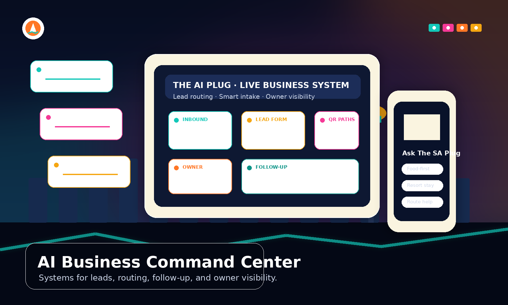

Visitor routing system
People arrive with different goals. The site routes them by situation instead of forcing everyone through the same page.
The AI Plug
Websites, smart forms, QR funnels, lead routing, customer intake, automations, phone/chat planning, and owner-visible workflows built around how your business actually operates.
The SA Plug is the live example — a real visitor guide built to route people by situation, capture requests, support recommendations, and prove how an AI-assisted business system can work in the real world.

Live proof
This site is not a mockup. It is a working local guide built around real visitor decisions: where to eat, what to do downtown, how to plan around resorts, and when to request help instead of guessing.

The SA Plug routes real visitor intent — not a demo deck.
People arrive with different goals. The site routes them by situation instead of forcing everyone through the same page.
Structured intake captures the details a business actually needs — not vague “contact us” noise.
Pages can be shared from vehicles, counters, flyers, storefronts, hotels, and events.
Requests can become organized leads, owner alerts, callbacks, booking paths, and customer records.
Live capability proof
System flow
Turn attention into routed requests, then organize follow-up with a workflow map that behaves like software — not brochureware.
Search, QR, referral, social, vehicle, flyer, or direct link.
One focused page for the visitor, offer, route, or business need.
Forms and prompts collect useful details without overwhelming the customer.
The right message goes to the right owner, service, urgency, or location.
Conversations land in one place instead of scattered texts and missed DMs.
Reminders and sequences help stop warm leads from going cold.
Owners can see volume, bottlenecks, and what is actually working.
Friction
Most businesses do not fail because marketing is flashy. They lose speed when calls, chats, emails, and DMs pile up with no dependable path from request to routed lead.
Friction
Missed calls after hours or during the rush.
What an AI-assisted system fixes: Alternate capture with clear forms, scripted SMS replies, routing rules, or planned phone/menu flows so nothing hits a dead end.
Business impact: Fewer “we never saw it” gaps and faster callbacks.
Friction
Slow follow-up while leads go cold.
What an AI-assisted system fixes: Instant acknowledgment, prioritized routing, templated human next steps — not black-box autonomy.
Business impact: Conversations pick up sooner, with less revenue left on “I’ll reply later.”
Friction
Weak websites that do not guide action.
What an AI-assisted system fixes: Better structure, sharper offers, tighter CTAs, mobile-first pacing, and optional AI-written drafts you approve.
Business impact: Higher-intent clicks and clearer paths to booking, quote requests, or walk-ins.
Friction
Scattered tools and double entry.
What an AI-assisted system fixes: Simple workflow maps and automation handoffs so one intake does not multiply across spreadsheets.
Business impact: Cleaner operations, fewer errors, clearer ownership.
Systems
Start with the bottleneck. Build the smallest useful system first, then expand when it proves itself.
Foundation
Best for Businesses that need a stronger website, better offer clarity, and clean customer paths.
Capture
Best for Businesses getting traffic but losing requests in texts, DMs, calls, or messy forms.
Operating layer
Best for Operators ready to connect intake, follow-up, content, dashboards, and service workflows.
Capability stack
Layer only what earns ROI — mapped to workflow, tooling, and what your team can maintain.
What it is: Fast, polished builds with drafts, structure, and owner-reviewed content.
Why it matters: A site should sell clarity and credibility on first scroll.
Best for: Restaurants, shops, crews, clinics, nightlife, consultants, tourism, and service businesses.
What it is: Offer-specific pages plus capture points that tie to routing.
Why it matters: Stop losing leads in texts, missed calls, and scattered inboxes.
Best for: Booked jobs, consultations, reservations, service calls, and appointments.
What it is: Step logic and required fields tuned to fulfillment, multilingual where needed.
Why it matters: Less back-and-forth. Cleaner handoffs. Better first contact.
Best for: Remodeling, transport, spas, gyms, dentists, events, clubs, and concierge requests.
What it is: Call-menu design, escalation paths, safe scripts, and handoff planning.
Why it matters: After-hours answers without risking brand voice or customer trust.
Best for: Busy lines, franchises, concierge, dispatch desks, and service crews.
What it is: Calendars, deposits, reschedule flows, and confirmation structure aligned to how you operate.
Why it matters: Friction kills margin on small-ticket and high-value visits alike.
Best for: Hospitality, salons, clinicians, tastings, consultations, transport, and field services.
What it is: Email/SMS checkpoints triggered by intake status and platform rules.
Why it matters: Polite persistence beats forgetting.
Best for: Proposal pipelines, memberships, reminders, waitlists, and quote follow-up.
What it is: Page templates, topic maps, and editorial calendars your team can own.
Why it matters: Neighborhood relevance compounds when it is disciplined.
Best for: Tourism, nightlife, restaurants, retail, home services, and local service areas.
What it is: Print-to-mobile journeys with tracking-friendly URLs.
Why it matters: Turn foot traffic, vehicles, flyers, table tents, and storefronts into measurable demand.
Best for: Bars, patios, fleets, boutiques, booths, hotels, vehicles, and check-in desks.
What it is: Request flows and timing that respect customers — never spammy.
Why it matters: Proof matches how locals actually decide.
Best for: Hospitality, home services, retail, gyms, clinics, and appointment businesses.
What it is: Lightweight KPI views when your tools support them.
Why it matters: Owners stop flying blind.
Best for: Operators managing multiple inbound channels.
Local operators
If you schedule crews, reservations, tastings, pickups, installs, nightlife tables, rides, tours, quotes, or memberships — the same pipeline thinking applies.
Trust
Built for skeptical operators. You are staking your name on whatever ships. Transparency beats hype.
Build process
Where do leads come from, where do they stall, and who owns the next step?
Website clarity, intake, routing, follow-up, QR flow, phone/chat, or reporting.
Launch something practical first instead of overbuilding a fantasy stack.
Use actual messages, actual customers, actual staff habits, and actual owner feedback.
Add automations, dashboards, content systems, and AI-assisted workflows only where they earn trust.
Send the business type, current website if you have one, and the biggest problem you want practical AI systems to tackle first. The AI Plug maps the stack around your real operation — not buzzwords.
The SA Plug is the live capability proof: local guide, routing logic, request capture, QR-ready pages, and mobile-first visitor flows.